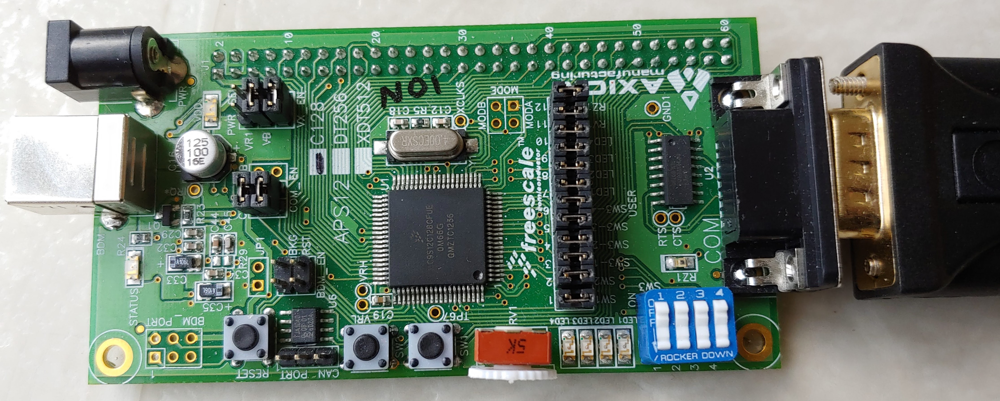
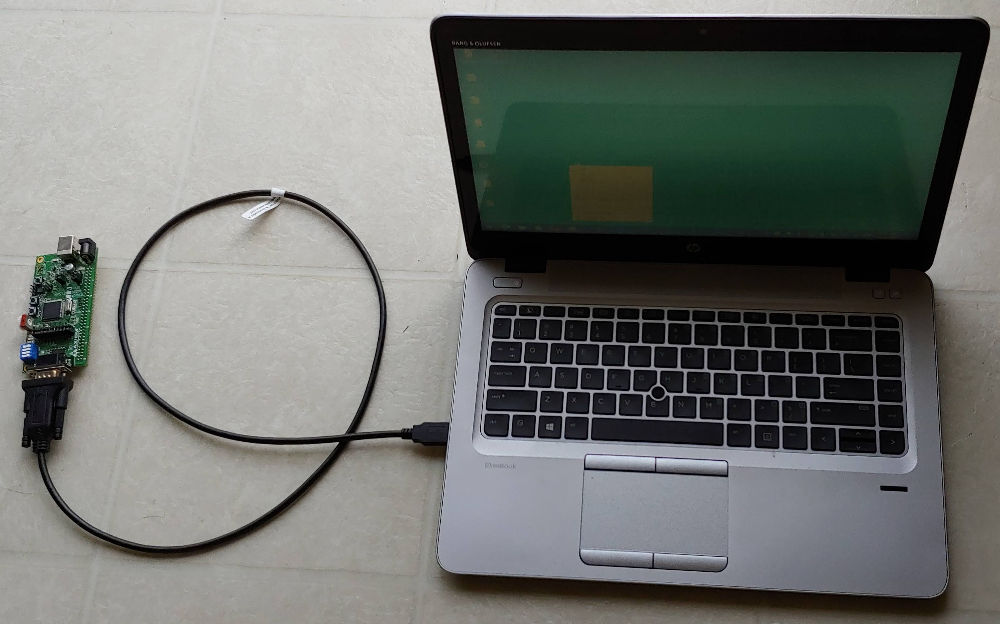

CMPEN 472, The Pennsylvania State University
Homework 1
Due: Jan. 27, 2021 11:30pm
Objective
1. Download two additinal textbooks (on-line free .pdf files)
and install MC9S12C128 development tool - CodeWarrior.
2. Learn how to assemble a simple source program
and learn how to simulate the program.


Instruction
-
Read the textbook Chapters 1, Chapter 2, and Chapter 3. You do
NOT need to understand all of the content.
-
Read the textbook Appendix 1.6
-
Download two additional textbooks:
i. S12CPUV2 - Reference Manual (
PDF)
ii. MC9S12C Family - Data sheet (
PDF)
from NXP
Freescale MC9S12C128 Summary/Documentation page.
-
Download the class programming tool CodeWarrior.
Unzip the downloaded file and install the program.
Click here for the download, installation, and
project start guide.
-
Now view the Homework 1 sample program hw1.pdf and hw1b.pdf
-
To enter your first program, create a new project with CodeWarrior.
And name it cmpen472hw1, which will contain your homework 1 assembly program.
-
Create your own 'main.asm' file by typing in the text from the
'hw1.png' file. For each line, be careful on what character you type on the
first column. Each line may include up to four fields: a label,
an operation (instruction mnemonic or assembler directive),
operands, and a comment. Some fields are identified by typed characters
in a given column.
Please study and be familiar with MC9S12C128 Assembly Language Syntax!!!
Click here for the MC9S12C128 Assembly Language Syntax information.
-
Do make the 'main.asm' file and generate the .s19 executable file.
Then, start CodeWarrior debugger. You may want to click 'Tile' option under the 'Window' menu.
-
In the CodeWarrior debugger, click on the 'Execute one' button.
-
Click again and watch the various windows - how the program lines are being executed.
-
Try to understand the program. You may want to read
the databook/datasheet or reference manual for MC9S12C128 chip.
They contain complete explanation and descriptions of the instructions.
-
Modify the program including the comments. Have the program
put 202 stars instead of 10 stars.
-
Again assemble and simulate your program. Be sure that your
program does not have errors and it loops 202 times. You may even
try adding an error to your program and see what happen when you
assemble (this is make command) and simulate.
-
Be sure to update the comments (put your name, etc.) and correct all the
errors.
-
You may want to see and check the
Sample Grading Sheet for this homework.
-
Copy your 'main.asm' file to 'cmpen472hw1_YourLastName.asm'.
For example, mine will be 'cmpen472hw1_choi.asm' Then submit your
file (do NOT ZIP your file).
-
Turn-in your project source code file through
Penn State CANVAS.
Upload your source code file into the CANVAS Assignment's Homework submission.
Be sure to select CMPEN 472 class and correct Homework number,
and correct file name.
Congratulations on your very first CMPEN 472 homework completion!
Epilogue:
Flow chart of the Homework 1 program.
Click here.
Aid for the Homework 1.
Click here.